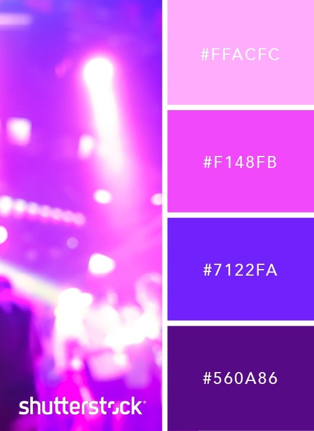
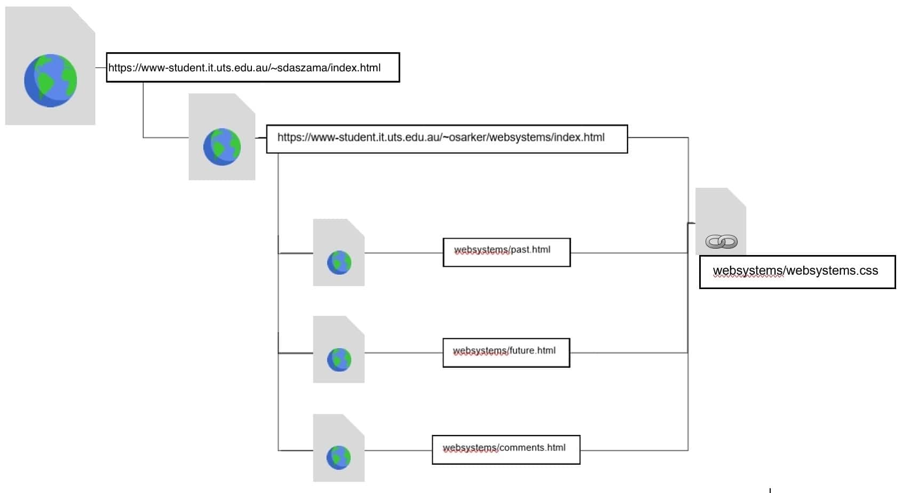

Technical Comments
| Class/ID | Description |
|---|---|
| #logo | Controls the appearance of the self-designed logo in the top left hand corner, allowing it to remain anchored in the top left corner of all pages. |
| body | Sets the default font presets and background attributes of all pages on the website. Also provides a customised margin. |
| #homebody | Contols the appearance of the background image on the home page, an exception which overrides the CSS applied for other body backgrounds. |
| .menu | The class which controls the bar menu in its normal presentation, including its positioning, present on all pages. Pseudoclasses and subclasses beneath this one deterine how the bar menu interacts with users, particularly the .menu a:hover pseudoclass. |
| .main | The controlling class for content which sits in the majority of the page, i.e. Between the menu header and the footer. |
| #mainpagetext | A specific id which controls the different layout of text on the home page. |
| #maintitle | A span class which sets the font for the header on the main page, "Shoryu Das-Zaman". |
| #mainopener | Similar to the above span class, but for the "I am" opening title font. |
| .title | A class dictating how all the page titles (on pages other than home) appear, with their font and alignment |
| .subtitle | This class determines how the titles of sections are displayed, including their font and alignment. |
| #spacer | A div which exists only on the home page to provide room and readability for users. |
| .section & .commentsection | A major class which outlines how sections on each page behave, including the setup of the neon sign effect and rounded edges. Comment section is separate due to differences in display and alignment. |
| .pastsection_img, .futuresection_img & .commentsection_img | Classes which decide how the images present themselves within sections on the past, future & comments page. They differ primarily due to their margins and how they are positioned within the section. |
| .footer | The class which ensures that the footer section, with three image hyperlinks, maintains its position at the end of the page, and that the logos of services offered in the footer maintain a uniform size. |
DESIGN & AESTHETIC
This page has a neon-purple colour scheme, adapted from Shutterstock. This is incorporated in all aspects of the page, including the tinting of images and the logo. I chose this scheme as it is straightforward in its application, and the colours are easy to apply on top of each other. As Paul Robert Lloyd refers to, "Everything old is new again," further inspiring my 80's theme neon designs. Unlike other colour schemes, it is also incredibly bright and makes the page look more dynamic. Even small additions, such as a brick background allow the colours to almost come out of the screen and scream vibrancy to the user.
Furthermore, a set of fonts was chosen for this website: A Neon Font for the menu, and Rubrik for the content. These are both sans-serif fonts, and have a modern, sleek appeal, working well with the colour scheme for the rest of the website.

Furthermore, a set of fonts was chosen for this website: A Neon Font for the menu, and Rubrik for the content. These are both sans-serif fonts, and have a modern, sleek appeal, working well with the colour scheme for the rest of the website.
WEBSITE STRUCTURE
The whole website contains 4 HTML webpages with 1 CSS file. The image below shows the hyperlink in 'index.html' in the 'public_html' directory leads to one HTML file called 'index.html' in a directory called 'websystems'. This 'index.html' is the home page of the website and has hyperlinks to 'index.html', 'past.html', 'future.html', and finally 'comments.html'. All of these webpages contain elements of CSS, from a file called 'websystems.css', which defines the User Interface and design throughout the website.

ACESSIBLITY
There are numerous accessibility issues that frequently occur on webpages, as outlined by WebAIM (a web organisation with accessiblity in mind). These have all been addressed in my website:
- Visual: Blindness, Colour-Blindness
- Hearing: Deafness, Hard of Hearing
- Motor: Low fine motor control, inability to use a mouse
- Cognitive: Learning disabilities, distractibility
✔ Alternative Text (those relying on a screen reader can interpret images)
✔ Document Structure (all documents are logically structured to assist those with focus issues)
✔ Headers for Tables (this is very helpful for screen readers)
✔ Links make sense without context (not everyone follows the expected order of content engagement)
✔ No Audio (those who have hearing difficulties are not missing out)
✔ Colour doesn't convey meaning (the colour on this page exists only for aesthetic purposes)